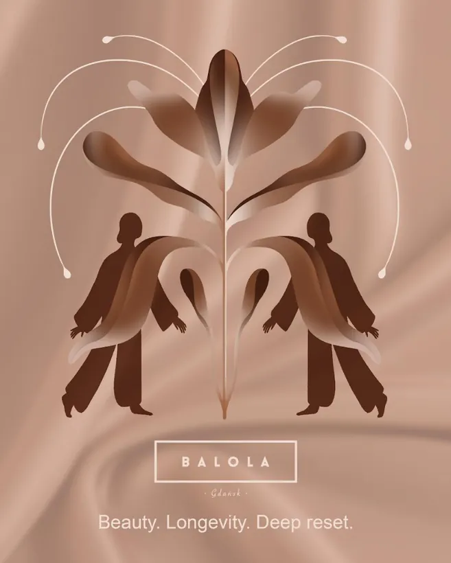
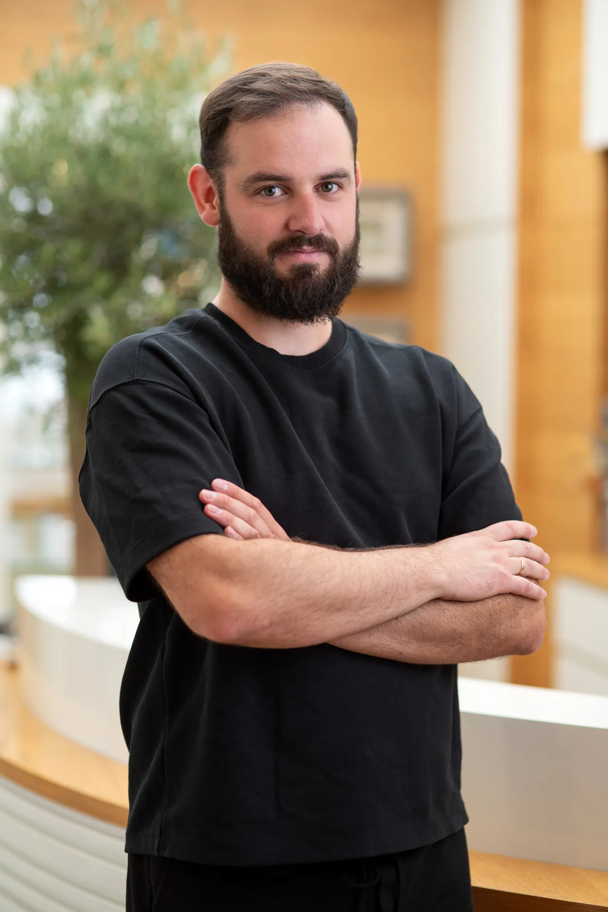

O nas
Balola to 12 lat doświadczenia, które zaczęło się w Sopocie. Gdańsk jest kolejnym rozdziałem tej historii, z własnym charakterem, ofertą i widokiem na Motławę.

Od Sopotu do Gdańska
Balola powstała w Sopocie, przy ul. Kościuszki, z myślą o kobietach aktywnych, wymagających i świadomych - takich, które oczekują realnego efektu i chcą, żeby czas w gabinecie był przyjemny.
Po 12 latach otwieramy kolejny rozdział w Hotelu Gdańsk Boutique. Ta sama dbałość o skuteczność, a do tego więcej przestrzeni na odpoczynek, rytuały i regenerację - na piątym piętrze, z widokiem na Motławę.


Longevity w Balola, po prostu
Nowoczesna pielęgnacja, regeneracja i wellbeing w estetyce współczesnego longevity. Tak opisujemy nasze podejście: świadome dbanie o siebie, regenerację, dobre samopoczucie i jakość życia na dłużej.
Co oznacza longevity?
Dosłownie długowieczność. W pielęgnacji to dbanie o skórę i ciało tak, żeby dobrze wyglądały i dobrze się czuły nie tylko dziś, ale także za kilka lat.
Jak to wygląda w praktyce?
Łączymy relaks, terapie manualne i nowoczesne technologie. Zamiast jednorazowego efektu proponujemy przemyślany plan: zabiegi dobrane do potrzeb skóry, regenerację oraz pielęgnację domową, dzięki którym efekty utrzymują się na dłużej.
Czy to dla mnie, jeśli pierwszy raz słyszę o longevity?
Tak. Zacznij od bezpłatnej, 30-minutowej konsultacji. Opowiesz, czego potrzebujesz, a my podpowiemy, od czego zacząć.
A dodatki longevity w cenniku?
Uzupełnij swój zabieg na twarz lub ciało o dodatki longevity, dobrane do Twoich potrzeb. To dodatkowy czas na regenerację, wyciszenie i jeszcze głębszy relaks. Możesz również wybrać samodzielny, 30-minutowy seans longevity.
Specjaliści
Balolę prowadzi Marta Socha-Kilanowska wspólnie z mężem, Jakubem Kilanowskim. W Gdańsku pracuje zespół kosmetologów i masażystów, którzy łączą zabiegi z wykorzystaniem urządzeń high-tech z terapiami manualnymi, w tym masażem i refleksologią, oraz rytuałami SPA w nurcie longevity.
Każdą wizytę zaczynamy od rozmowy. Dobieramy zabieg do tego, czego potrzebuje skóra i jak chcesz się czuć po wyjściu, a po zabiegu podpowiadamy, jak przedłużyć efekt w domu.

Poznaj nas

Marta Socha-Kilanowska
Właścicielka Balola i kosmetolog
Z kosmetologią jestem związana od ponad osiemnastu lat, a z Balola - od samego początku jej istnienia. Przez ten czas zdobywałam doświadczenie w gabinecie i rozwijałam własną wizję miejsca, w którym skuteczna pielęgnacja łączy się z odpoczynkiem i dobrym doświadczeniem całej wizyty.
Czytaj dalejZwiń
W pracy najważniejsze jest dla mnie zrozumienie potrzeb skóry i zaplanowanie kolejnych kroków. Lubię wiedzieć, co robimy, dlaczego wybieramy daną metodę i jak wpisuje się ona w dłuższą terapię. Interesują mnie nowoczesne technologie, regeneracja i podejście longevity. Rozwijając ofertę, szukam rozwiązań, które pozwalają sensownie łączyć te obszary.
Jako właścicielka dbam o kierunek rozwoju Balola, dobór zabiegów i standardy pracy. Nadal jednak ogromną satysfakcję daje mi kontakt z klientami - obserwowanie zmian w ich skórze i relacje budowane przez lata.
Mam też słabość do detali, co widać we wnętrzach Balola. Prywatnie jestem mamą Kazika, a wolne chwile chętnie poświęcam kompozycjom z suszu i dekoracjom. Lubię dobierać materiały, łączyć kolory i nadawać przestrzeni własny charakter.

Jakub Kilanowski
Masażysta i współwłaściciel SPA
Zanim związałem się z Balola, moje życie zawodowe przez lata toczyło się na morzu. Praca marynarza nauczyła mnie samodzielności, odpowiedzialności i opanowania. Dziś te doświadczenia wykorzystuję jako masażysta i współwłaściciel Balola SPA w Gdańsku.
Czytaj dalejZwiń
W pracy z ciałem cenię konkretne działanie - możliwość pomocy w rozluźnieniu mięśni i stworzenia komuś warunków do odpoczynku. Ważne jest dla mnie dopasowanie masażu do osoby, jej samopoczucia i oczekiwań. Lubię moment, w którym codzienny pośpiech ustępuje, a ciało stopniowo się odpręża.
Jako współwłaściciel zajmuję się również codziennym funkcjonowaniem SPA i sprawami organizacyjnymi. Wspólnie z Martą tworzymy miejsce, w którym nasze różne doświadczenia i umiejętności wzajemnie się uzupełniają.
Wolny czas najchętniej spędzam z rodziną. Moją pasją jest gotowanie dla najbliższych - przyjemność sprawia mi zarówno przygotowywanie potraw, jak i wspólne spotkania przy stole. Odpoczywam także podczas spacerów z psem i spokojnych chwil w domowym gronie.
Hania
Menedżerka SPA i opiekunka recepcji
W Balola łączę pracę na recepcji w Sopocie z rolą menedżerki SPA w Gdańsku, gdzie wspieram również obsługę recepcji. Moja praca obejmuje codzienną organizację, kontakt z gośćmi i współpracę z zespołem. Lubię, kiedy poszczególne sprawy układają się w całość, a dobra komunikacja pomaga sprawnie działać.
Czytaj dalejZwiń
Na recepcji cenię różnorodność spotkań i możliwość pomocy - czasem w wyborze terminu, innym razem w znalezieniu odpowiedzi na pytania przed pierwszą wizytą. W roli menedżerskiej ważne są dla mnie współpraca i szukanie praktycznych rozwiązań w codziennych sytuacjach.
Studiuję psychologię, ponieważ fascynują mnie ludzkie emocje, motywacje i zachowania. Ta ciekawość drugiego człowieka towarzyszy mi również zawodowo i pomaga lepiej rozumieć różne perspektywy.
Poza pracą interesuję się modą, która daje mi przestrzeń do kreatywności i wyrażania siebie. Jestem miłośniczką kotów, lubię otaczać się roślinami i chętnie wracam do książek o Harrym Potterze. To moje sposoby na odpoczynek i oderwanie się od codziennych obowiązków.
Martyna
Masażystka i refleksolog
Od kilku lat zajmuję się profesjonalnym masażem i refleksologią. W swojej pracy pomagam rozluźnić ciało, zmniejszyć odczuwane napięcie i znaleźć chwilę odpoczynku od codziennego pośpiechu. Szczególne miejsce zajmuje u mnie refleksologia stóp - cenię ją za spokojny rytm oraz możliwość skupienia się na tym, jak dana osoba odczuwa swoje ciało.
Czytaj dalejZwiń
Podczas zabiegu łączę wiedzę z wyczuciem i obserwacją. Dobieram sposób pracy do indywidualnych potrzeb, bo czasem ciało potrzebuje bardziej zdecydowanego masażu, a innym razem łagodności i wyciszenia. Regularnie poszerzam swoje kompetencje, aby rozwijać warsztat i coraz lepiej odpowiadać na potrzeby moich klientów.
Najlepiej odpoczywam blisko natury. Spacery i czas na świeżym powietrzu pomagają mi zresetować głowę i odzyskać energię. Lubię też tworzyć własnymi rękami - kiedy przychodzi wena, sięgam po pędzel i farby albo próbuję swoich sił w lepieniu z gliny. Sam proces tworzenia daje mi dużo radości.
Kasia
Kosmetolog
Jestem magistrem kosmetologii i od dziesięciu lat pracuję w branży beauty. Doświadczenie zdobywałam w gabinetach kosmetologicznych, day spa oraz studiu modelowania sylwetki. Pozwoliło mi to poznać różne obszary pielęgnacji i rozwinąć wszechstronne podejście do pracy z twarzą i ciałem.
Czytaj dalejZwiń
Szczególnie lubię zabiegi, w których mogę łączyć możliwości nowoczesnych technologii z technikami manualnymi. Dobierając metody, uwzględniam potrzeby skóry, oczekiwania oraz codzienne nawyki danej osoby. Bliska jest mi również filozofia longevity, która zachęca do świadomej, długofalowej troski o siebie, regenerację i dobre samopoczucie.
Wnoszę do gabinetu dużo serdeczności i pozytywnej energii. Lubię kontakt z ludźmi i zależy mi, aby spotkanie było zarówno wartościowym zabiegiem, jak i przyjemną chwilą dla siebie. Największą satysfakcję daje mi widok osoby, która wychodzi wypoczęta, zadowolona i z uśmiechem na twarzy.
Prywatnie jestem mamą dwóch córek. Uwielbiam podróże - dalekie wyjazdy i małe, spontaniczne wyprawy. Lubię aktywnie spędzać czas, odkrywać nowe miejsca, a w domu chętnie przygotowuję słodkie wypieki dla najbliższych.

Hubert
Kosmetolog i opiekun recepcji
Jestem kosmetologiem, a szczególnie interesuje mnie praca ze skórą problematyczną. Skupiam się na poprawie jej kondycji oraz pomaganiu w budowaniu świadomej pielęgnacji. Wierzę, że dobre efekty wymagają indywidualnego podejścia, cierpliwości i systematyczności - zarówno podczas wizyt, jak i w codziennym dbaniu o skórę.
Czytaj dalejZwiń
Zależy mi na tym, aby osoby, z którymi pracuję, rozumiały proponowane rozwiązania. Chętnie wyjaśniam, dlaczego wybieramy dany zabieg lub kosmetyk i jaką rolę pełni on w całym planie pielęgnacji. Lubię towarzyszyć w tym procesie i wspólnie obserwować zmiany.
W Balola spotkasz mnie również na recepcji. To druga część mojej pracy, w której wykorzystuję znajomość oferty i pomagam w organizacji wizyt.
Poza gabinetem angażuję się w pomoc seniorom, a w wolnych chwilach pielęgnuję swoją kolekcję roślin. Te zajęcia nauczyły mnie cierpliwości, regularności i dostrzegania potrzeb innych. Przypominają mi też, że drobne gesty i konsekwentna troska mają znaczenie.
Katarzyna
Kosmetolog
Nie tylko wiem, co nakładam na skórę - znam również drogę, jaką przechodzi kosmetyk, zanim trafi do gabinetu czy domowej pielęgnacji. Jestem absolwentką kosmetologii Collegium Medicum w Bydgoszczy oraz magistrem przemysłu farmaceutycznego i kosmetycznego Gdańskiego Uniwersytetu Medycznego.
Czytaj dalejZwiń
Doświadczenie zdobywałam zarówno w pracy gabinetowej, jak i w laboratorium badawczo-rozwojowym, tworząc receptury kosmetyków od podstaw. Znam proces od pomysłu, przez formulację i badania, aż po wymagania dotyczące jakości i bezpieczeństwa. Dzięki temu na pielęgnację patrzę przez pryzmat składu produktu, jego przeznaczenia oraz rzeczywistych potrzeb skóry.
W gabinecie łączę przygotowanie naukowe z praktyką i technikami manualnymi. Cenię możliwości technologii, ale równie ważne są dla mnie dotyk i bezpośredni kontakt z drugim człowiekiem. To właśnie połączenie tych elementów najlepiej oddaje moje podejście do kosmetologii.
Poza pracą lubię odkrywać nowe smaki, eksperymentować w kuchni i celebrować codzienne chwile. Macierzyństwo przypomina mi, jak cenne są cierpliwość, uważność i małe momenty tylko dla siebie.
Karolina
Masażystka
Masażem interesowałam się na długo przed tym, zanim stał się moim zawodem. Zaczęłam od kursów masażu klasycznego i relaksacyjnego, które rozbudziły we mnie chęć dalszej nauki. Następnie ukończyłam dwuletnią Pomorską Medyczną Szkołę Policealną w Gdańsku na kierunku technik masażysta.
Czytaj dalejZwiń
Najbliższe są mi masaż klasyczny i relaksacyjny. W masażu klasycznym skupiam się na pracy z napiętymi mięśniami i poprawie komfortu ciała. W relaksacyjnym lubię spokojne tempo i płynność ruchów, które pomagają zwolnić i odpocząć. Siłę oraz sposób pracy dopasowuję do potrzeb i preferencji osoby korzystającej z zabiegu.
Jestem osobą empatyczną i wyciszoną. Spokój jest mi bliski zarówno w pracy, jak i poza nią - dobrze odnajduję się w rytmie, który pozwala skupić się na jednej osobie i wykonywanym masażu.
Prywatnie cenię domowe zacisze. Lubię czytać książki, spacerować i słuchać rocka z lat 70. i 80. Kocham zwierzęta - towarzyszą mi szesnastoletnia suczka Sonia oraz myszki, które są ważną częścią mojej codzienności.
Opinie gości
Oceny sprawdzone 9.11.2026. Opinie z Booksy cytujemy dosłownie (bez emotikonów).
„Jestem bardzo zadowolona z wizyty! Zabieg przebiegł świetnie, atmosfera była bardzo miła i komfortowa. Konsultacja była szczegółowa, wszystko zostało wyjaśnione. Widać pełen profesjonalizm i troskę o klienta. Na pewno wrócę ponownie! Podziękowanie dla Pani Katarzyny Kreńskiej”
„Zabieg bardzo relaksujący i odżywczy. Pan Hubert dokładnie omawiał każdy etap zabiegu, dzięki czemu czułam się zaopiekowana i w pełni komfortowo. Profesjonalne podejście, miła atmosfera i chwila prawdziwego relaksu. Zdecydowanie polecam!”
„Świetnie wykonany zabieg, Pani Katarzyna sprawiła, że atmosfera podczas zabiegu była przyjemna i czułem się zaopiekowany choć trochę mnie stresował zabieg laserowy. Polecam serdecznie”
„Bardzo przyjemny masaż, piękne glow na twarzy, super atmosfera, profesjonalnie i przytulnie. Polecam serdecznie”
„Laminacja + masaż głowy ekstra!!! Polecam wszystkim”